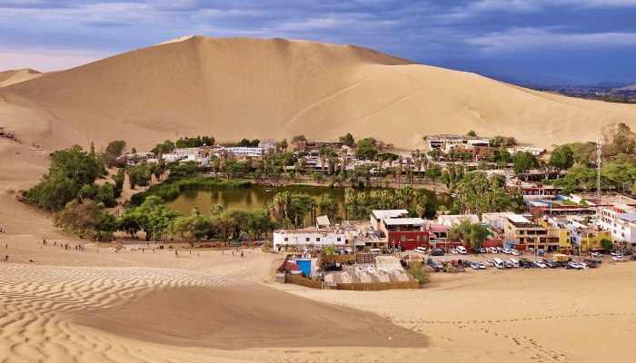

Fiestas Globales: Celebraciones Culturales en Destinos Turísticos

Cañón de Colca
Festival Wititi: Este festival
tiene lugar en la ciudad de Chivay y es una colorida
celebración de danza, música y trajes tradicionales.
Festival Cruz del Cóndor: Un evento que celebra a los
majestuosos cóndores que vuelan sobre el cañón,
ofreciendo vistas impresionantes a los visitantes.
Fiestas de la Cosecha: Ocasiones en las que los
lugareños celebran la abundancia de la tierra con danzas
tradicionales, música y festines..

Laguna Titicaca
Semana de Puno: Celebrada durante la primera semana
de noviembre, la Semana de Puno recuerda a Manco
Cápac, quien, según la leyenda, emergió de las
aguas del Lago Titicaca para fundar el Imperio Inca.
Fiesta de la Virgen de la Candelaria: Famosa por su
celebración anual, esta festividad en la ciudad de
Puno reúne a visitantes de todo el mundo para una
experiencia cultural vibrante. Año Nuevo Aymara: Los
rituales solemnes del Año Nuevo Aymara muestran las
ricas tradiciones y herencia de las comunidades
indígenas alrededor del Lago Titicaca.

Laguna Huamantay
Laguna Humantay: Es una joya escondida en la región
montañosa del Perú, conocida por su belleza natural
y paisajes impresionantes. Ceremonias y rituales: En
la laguna, se pueden presenciar ceremonias y rituales
locales que reflejan la conexión espiritual con la naturaleza.
Actividades: Al visitar la laguna, se pueden realizar
actividades como hacer trekking, observar los rituales
locales, acampar en lugares místicos y degustar platos
tradicionales. Eventos especiales: En ocasiones especiales,
como festividades locales, se pueden llevar a cabo
celebraciones que resaltan la cultura y tradiciones de la zona.

Islas Ballestas
Tour a las Islas Ballestas:
Se puede disfrutar de un tour a las Islas Ballestas para
observar la vida marina y las aves que habitan en la zona.
Visita a La Vitivinícola de Chincha: Una visita a la
vitivinícola de Chincha puede ser una experiencia enriquecedora
para conocer más sobre la producción de vinos locales.
Degustación GRATIS de vinos y piscos: Durante algunas celebraciones,
se pueden realizar degustaciones gratuitas de vinos y piscos,
destacando la tradición vitivinícola de la región.
Show de Baile: En ocasiones especiales, se pueden disfrutar
de shows de baile que reflejan la cultura y la alegría de la región

Las Lineas de Nazca
Fiestas Patronales: Se celebran
fiestas en honor a la Virgen de Guadalupe, Patrona de Nasca,
con novenas y tradiciones religiosas que reflejan la fe y la devoción de la comunidad.
Eventos Especiales: Se llevan a cabo eventos como la Declaración
de las 7 Maravillas del Perú, la Fiesta del Sr. de la Divina
Misericordia y actividades en el Centro Educativo Indalecio Trillo - Lomas.
Patrimonio Cultural: Las Líneas de Nazca y Palpa son un tesoro
con más de 800 figuras declaradas Patrimonio Cultural de la Humanidad
por la Unesco, lo que resalta su importancia histórica y arqueológica.

Huacachina
Tour nocturno del pisco y el vino + Fiesta en
Huacachina: Disfruta de un tour nocturno que
incluye la ruta del pisco y del vino, seguido
de una fiesta en Huacachina para sumergirte
en la vida nocturna de la región. Atracciones
populares en Huacachina: Entre las actividades
más populares se encuentran visitar el Oasis
de Huacachina, recorrer las pintorescas áreas
peatonales y disfrutar de tours en vehículos todo terreno.
Festival del Pisco y Fiesta de la Sirena
de Huacachina: Durante festividades especiales,
se llevan a cabo eventos como el festival del pisco
y la representación de la leyenda de la Sirena de Huacachina.
Actividades en el Oasis: Entre las actividades
que puedes realizar se incluyen sandboarding,
paseos en bote, picnics en el desierto, contemplar
el atardecer desde las dunas y paseos a caballo.